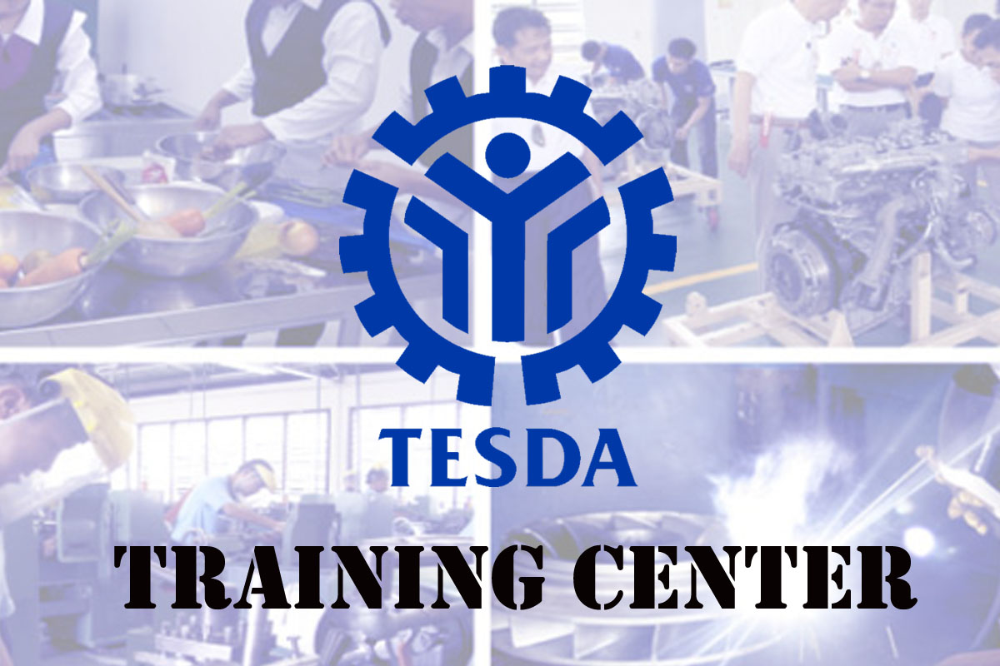

Welcome To Blue Phenix Training Center!
Blue Phenix Log, Feb 2, 2023
Mandate
The Technical Education and Skills Development Authority (TESDA) is the government agency tasked to manage and supervise technical education and skills development (TESD) in the Philippines. It was created by virtue of Republic Act 7796, otherwise known as the “Technical Education and Skills Development Act of 1994”. The said Act integrated the functions of the former National Manpower and Youth Council (NMYC), the Bureau of Technical-Vocational Education of the Department of Education, Culture and Sports (BTVE-DECS) and the Office of Apprenticeship of the Department of Labor and Employment (DOLE).
More About Blue Phenix Here.
Blue Phenix Log, Feb 1, 2023
Our Mission
TESDA sets direction, promulgates relevant standards, and implements programs geared towards a quality-assured and inclusive technical education and skills development and certification system.TESDA sets direction, promulgates relevant standards, and implements programs geared towards a quality-assured and inclusive technical education and skills development and certification system.